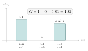
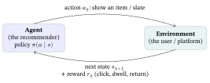

Appendix D — Reinforcement Learning for Recommendation
1. From bandits to RL: the MDP
RL formalizes sequential decision-making as a Markov Decision Process (MDP) — five pieces:
- a state \(s\) — a summary of the situation now (the user’s recent history, time, context);
- an action \(a\) — what the agent does (which item, or slate of items, to show);
- a reward \(r\) — the immediate payoff (a click, a watch-minute, a return visit);
- a transition — taking action \(a\) in state \(s\) moves you to a new state \(s'\) (this is the ingredient bandits lack: actions change the next state);
- a policy \(\pi(a\mid s)\) — the rule mapping states to actions, which is what we learn.
The goal is not the next reward but the expected long-term (cumulative, discounted) reward, the return:
\[ G \;=\; r_0 + \gamma\,r_1 + \gamma^2\,r_2 + \cdots \;=\; \sum_{t\ge 0}\gamma^{t}\,r_t, \]
where \(\gamma\in[0,1)\) is the discount factor — how much a reward one step later is worth than one now (it both encodes “sooner is better” and keeps an infinite sum finite). The value \(V(s)\) is the expected return from state \(s\) under the policy, and the action-value \(Q(s,a)\) the expected return from taking \(a\) in \(s\) then following the policy; RL methods learn one of these and act greedily (or explore, exactly as a bandit does) with respect to it.
Worked example — a discounted return. Suppose over three steps the agent collects rewards \(r = (1,\,0,\,1)\) with discount \(\gamma = 0.9\). Then \(G = 1 + 0.9(0) + 0.9^2(1) = 1 + 0 + 0.81 = \mathbf{1.81}.\) The click two steps out is worth only \(\gamma^2 = 0.81\) of an immediate one — the same click, discounted for being later. Push \(\gamma\to 0\) and RL collapses back to the bandit’s myopic “maximize the immediate reward”; push \(\gamma\to 1\) and the far future matters almost as much as now.

A bandit is exactly an MDP with a single state (no transitions): that is why the explore / exploit machinery of Bandits & Online Recommendation reappears here, now wrapped around a notion of long-term value rather than immediate reward.

2. Why RL is genuinely hard in recommendation
RL is alluring for recommendation — “optimize long-term engagement, not next-click clickbait” — but four obstacles make it hard in practice, and a from-zero reader should know them before reaching for it:
- A combinatorial action space. The action is often a whole slate (a page of items), so the number of actions is astronomically large — ordinary Q-learning, which enumerates actions, does not apply directly. SlateQ (Ie et al., 2019) is the standard fix: it decomposes a slate’s value into per-item \(Q\)-values under a click model, making the problem tractable.
- It is off-policy by necessity. You cannot let a half-trained agent experiment on real users for months, so you must learn from logged data collected by a different (old) policy — the hard, bias-prone off-policy setting (the same logged-data problem behind the bandit offline replay of Bandits & Online Recommendation).
- Delayed, sparse reward + the simulator gap. “Long-term satisfaction” arrives much later than the action that caused it (credit assignment is hard), and training RL needs millions of interactions — so teams build user simulators, which are themselves recommendation models and can bake in their own errors.
- Safety and non-stationarity. An exploring policy on a live platform can hurt real users and revenue, and user behaviour drifts under the policy itself.
3. The main approaches, in one line each
- Value-based (Q-learning). Learn \(Q(s,a)\) and act greedily; for slates, SlateQ makes it tractable by decomposition.
- Policy-gradient. Directly optimize the policy \(\pi_\theta\) by gradient ascent on expected return — common at web scale (e.g. off-policy-corrected REINFORCE for very large action sets).
- Deep RL for news (DRN). Zheng et al. (2018) use deep Q-learning for online news, explicitly modelling future reward and a user-return signal beyond the immediate click — a concrete case of optimizing for retention rather than the next tap.
4. Where it pays off — and an honest caveat
RL earns its complexity when the objective is genuinely long-horizon: total session length, multi-step journeys (a course syllabus, a show’s episode order), or retention (will the user come back next week?) — outcomes a one-step click model or bandit cannot express. The honest caveat, in the spirit of the reproducibility caution of Datasets & Benchmarks §5: RL in recommendation is operationally heavy and often hard to reproduce, and a well-tuned bandit or supervised ranker is frequently competitive on the metrics that are actually measured. Reach for RL when the objective itself is long-term and you can pay the engineering cost — not by default.
This is why RL lives here as a pointer appendix rather than a core chapter: the book’s through-line is collaborative filtering from classical to graph- and LLM-based models, and RL is an adjacent paradigm the through-line touches (via bandits) but does not need. For the one-step case, return to Bandits & Online Recommendation; for the full theory, the references below.
5. Glossary
| Term | Plain meaning |
|---|---|
| MDP | Markov Decision Process: state, action, reward, transition, policy — the formalism of RL. |
| State \(s\) | A summary of the current situation; the ingredient bandits lack (actions change it). |
| Policy \(\pi(a\mid s)\) | The learned rule mapping a state to an action; what RL optimizes. |
| Return \(G\) | Cumulative discounted reward \(\sum_t \gamma^t r_t\) — the long-term objective. |
| Discount \(\gamma\) | How much a later reward is worth vs. now; \(\gamma\to0\) is myopic (a bandit), \(\gamma\to1\) far-sighted. |
| Value / \(Q\)-value | Expected return from a state (\(V\)) or a state–action pair (\(Q\)). |
| Slate | A whole page/list of recommended items — the (combinatorial) action in slate RL. |
| Off-policy | Learning from data collected by a different (older) policy than the one being trained. |
| SlateQ | Decomposes a slate’s value into per-item \(Q\)-values, making value-based slate RL tractable. |
6. References
-
Sutton, R. S., & Barto, A. G. (2018). Reinforcement learning: An introduction (2nd ed.). MIT Press. (the standard text: MDPs, TD, Q-learning, policy gradients).
-
Ie, E., et al. (2019). SlateQ: A tractable decomposition for reinforcement learning with recommendation sets. In Proceedings of IJCAI. https://doi.org/10.24963/ijcai.2019/360
-
Zheng, G., et al. (2018). DRN: A deep reinforcement learning framework for news recommendation. In Proceedings of WWW. https://doi.org/10.1145/3178876.3185994
-
Afsar, M. M., Crump, T., & Far, B. (2022). Reinforcement learning based recommender systems: A survey. ACM Computing Surveys, 55(7), Article 145. https://doi.org/10.1145/3543846
Online sources verified June 2026.